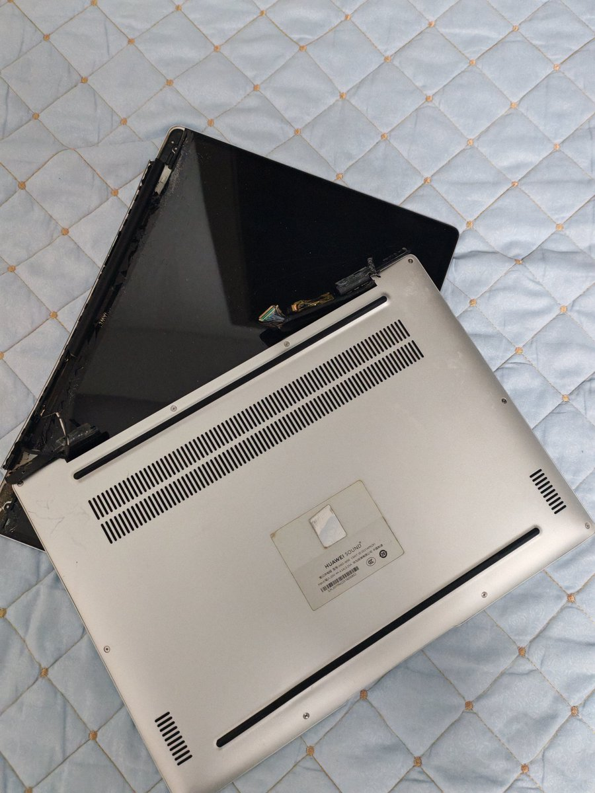
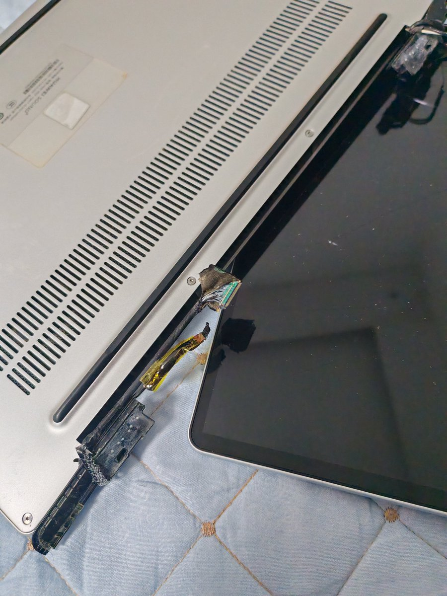
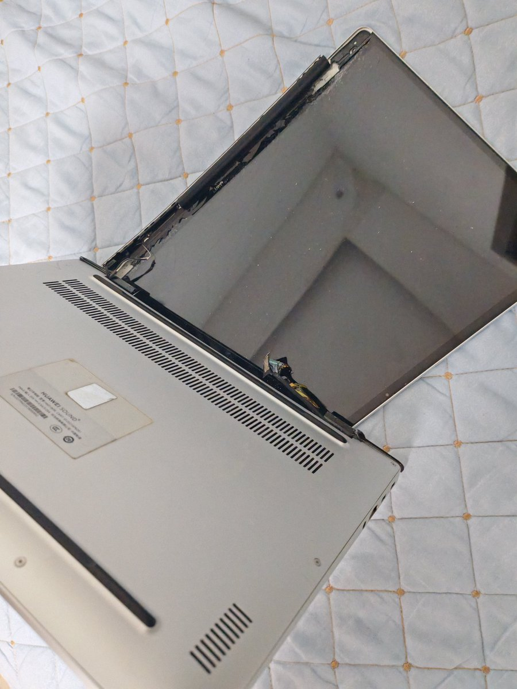

Murong🏳️⚧️🍥
@Murong_WangKezi
这件事情大概是这样：
当天晚上咱情绪本来就不太好，写完学校作业想着出去玩呢。but写完作业之前因为吃饭太累就睡着了，写完作业已经是晚上了。咱觉得太晚就算了，在家里玩玩也行。
可是家长非要咱写一课数学练习册（是突然说的，之前也没告诉过咱要写这个），咱不想写，于是就用学习的事情攻击咱www



Murong🏳️⚧️🍥
@Murong_WangKezi
因为某些原因需要消失一阵子
慕容会想念大家的喵
晚安，但 什么时候醒来不知道（或许也有可能不会再回来了？）
请联系：
Murong_Wangkezi@outlook.com https://t.co/P1FBPBpFXG